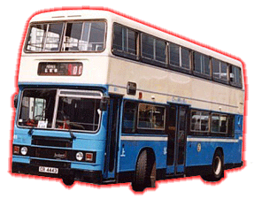
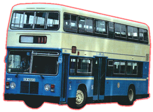

 |
 |
* BR 1 * |
* BR 2* |
| 型號 Model 引擎 Engine 容積 Engine Capacity 波箱 Gearbox 車身 Body Build 體積 Volume
載客量 Passenger
登記年份 Year |
: BR 1 & BR 2 : Gardner 6LXB (165 bhp) : 10.45 Litres : Leyland Hydracyclic Automatic (3-Speed Automatic) : Eastern Coachworks (ECW) : 9572L X 2500W X 4166H(mm) [BR 1] 10280L X 2500W X 4166H(mm) [BR 2] : (BR 1) 86P (BR 2) 103P : 1981 - 1997 |
Leyland Olympian [利蘭奧林比安型] 樣版車於1981年在中巴車隊中完成登記，裝有 ECW 外裳的巴士，全車設計由 Leyland Titan 演變過來，選用葉片彈簧懸掛係統及利蘭全自動變速箱，引擎採用 Gardner 的產品。BR 1 和 BR 2 車身長度不一，但兩車座位都編排為 2 + 2 佈局。
初期車子被派到行走山頂線及過海隨道 112 線試車，後來被改派往行走海旁快線。直至 1989 年，兩車被掃上豪華巴士色彩，又改用高背座椅，再被徵召上戰場行走 182 線，不久便退下火線，活躍於後備車隊中，直 1997 年全數退役。